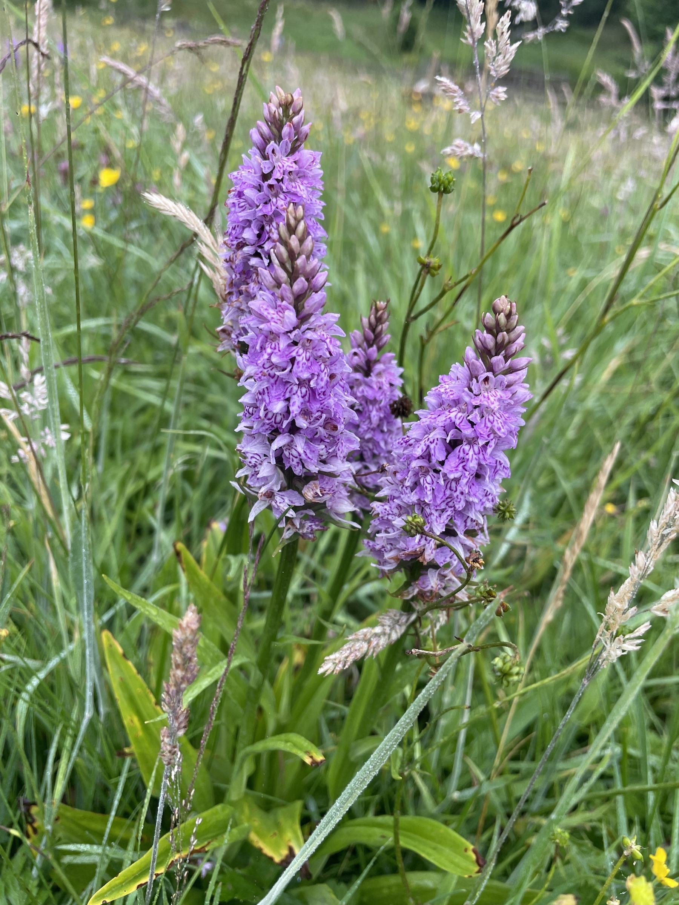
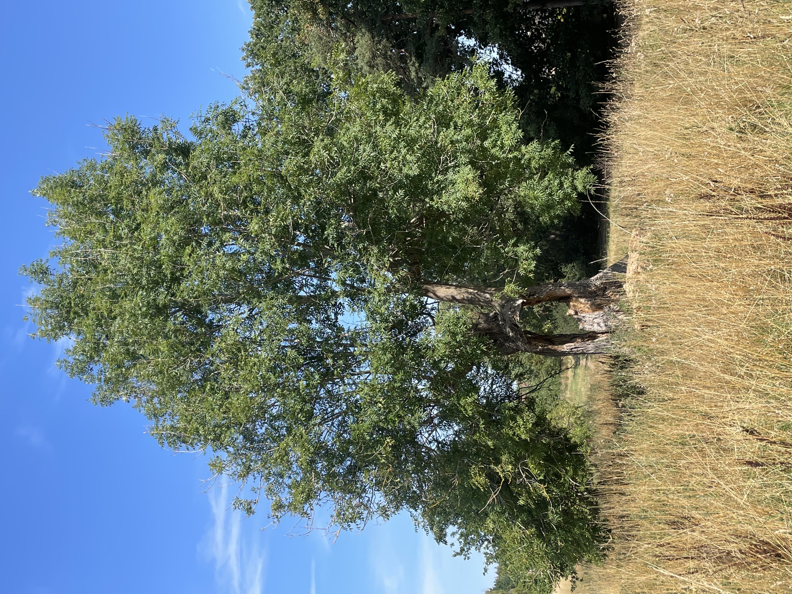
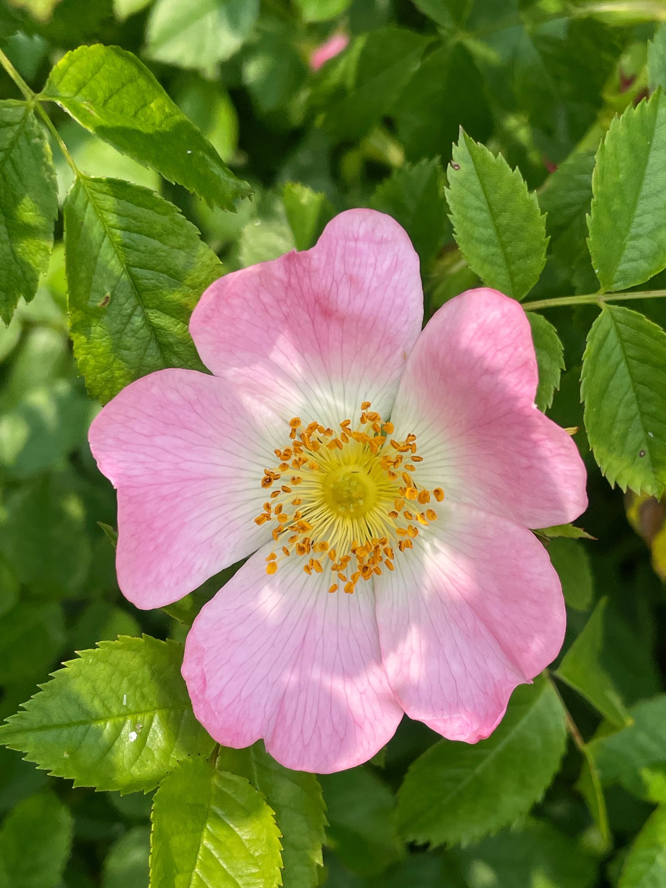
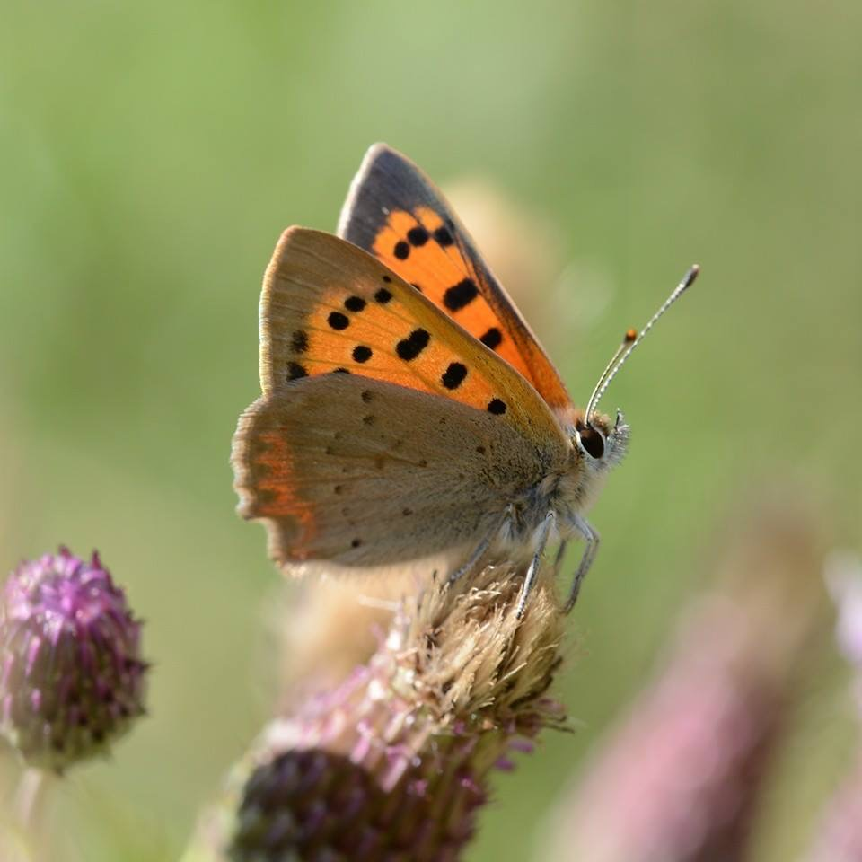
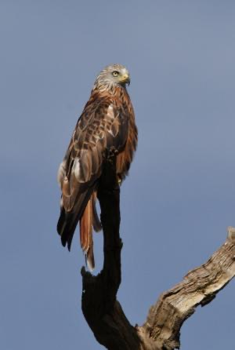
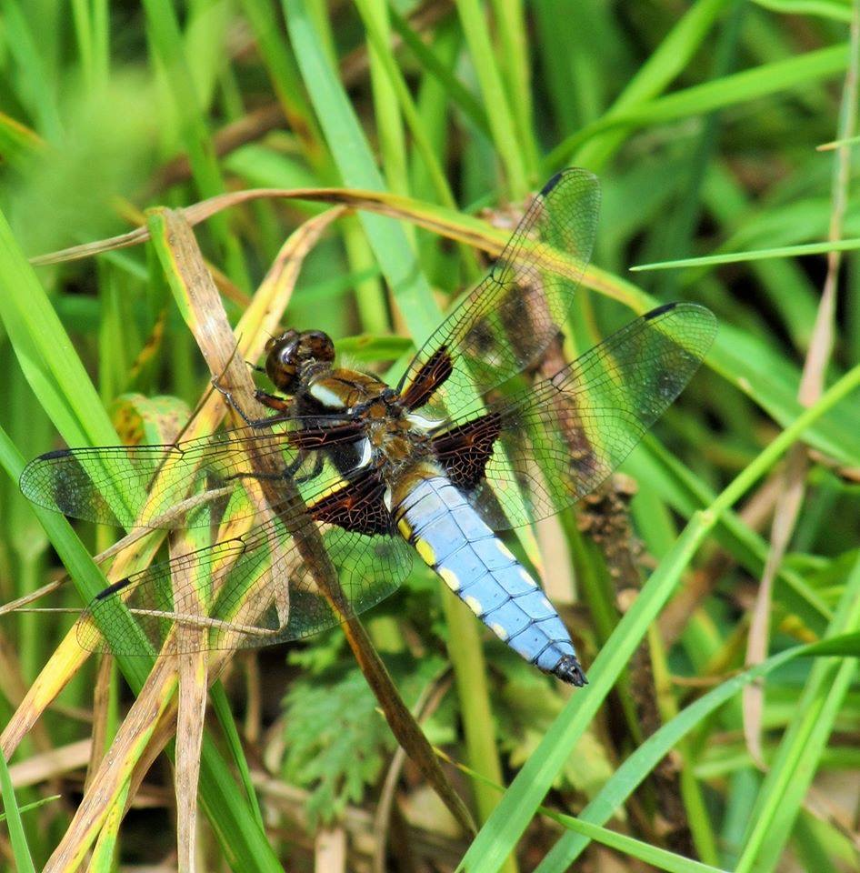
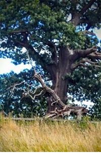
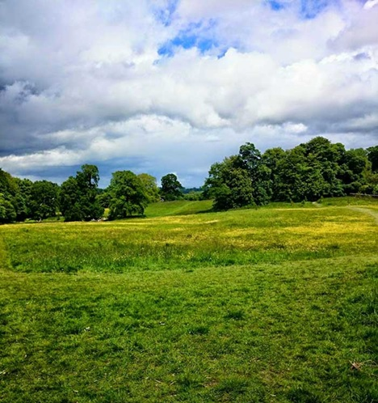

Stepping through the gate, into the park, you will find a peaceful semi-wild area, with a mosaic of habitats, home to a wide range of wildlife.
In its most recent history, the park was grazing land, and the grasslands still remain the dominant habitat. But even within this, there is variety. In the summer, strongly growing tall grasses tower above you, hiding the view of the park. In other areas, barely ankle high, herbs and wildflowers can be found.
There are also small areas of mixed deciduous woodland, wildlife ponds, damp meadows and scrub hedging round the perimeter.


Winter and new year
At the start of the year, even with frosty nights, the spring butterflies start to emerge, many species laying eggs on the early growth of nettles and garlic mustard. Mole activity becomes apparent as they establish new tunnels in their search for food, and hundreds of molehills appear. Across the park, the territorial drumming of greater spotted woodpeckers can be heard, as they make use of the dead limbs high up in the canopy of veteran oak trees. Rooks, which have spent much of the winter away from the park in nearby woods, return with their partners, to their rookery near the park entrance, noisily repairing winter damage to their nests.
Many other birds breed in the park. The old oak trees with their hollows provide nest sites for nuthatch and tit species, and noisy groups of sparrows use the hedges. The song thrush seems to always be singing along the park's northern boundary, repeating each phrase of its song.
Spring
By early April, swallows and house martins fly in from their overwintering grounds in Africa, and feed over the grasslands on the abundant insects. Standing next to the wildlife pond, you can watch as they swoop down to gather mud to build nests. By the end of April, swifts have returned and join the feeding frenzy.
Late spring is the time for colourful wildflowers, with red and white clover providing nectar for bees and butterflies and, as the grasslands turn yellow with a sea of buttercups, the common spotted and northern marsh orchids emerge en masse.


Summer
With the grass growing and the temperature rising, the summer grassland butterflies appear in huge numbers, feeding on the nectar from thistles, bramble, knapweed and ragwort and laying their eggs on the grasses, each species having its own preference.
The park is home to around 20 different species of butterfly, almost half of the total UK species, so come mid-July, it is the ideal location to join in with The Big Butterfly Count and spend 15 minutes counting what is flying.
Dragonflies also emerge in early summer. Large emperor dragonflies whirr past like tiny helicopters patrolling their chosen area, while common blue damselflies search for insects amongst the grass. The metallic blue demoiselle is also seen in the shadier areas near the ponds. Broad-bodied chasers, with their powder blue bodies, pursue each other at speed over the pond.
Occasionally foxes can be spotted, running for cover or leaping the fence into farmland beyond, and first visitors in the morning are sometimes lucky enough to see deer, grazing amongst the grass.
Autumn
As autumn takes hold, the ivy comes into flower and fruit around the park ripens, with apples, plums, hips, haws and elderberry providing easy pickings for wildlife stocking up for the winter. The last of the season's butterflies top up on nectar from ivy and sugar from fruit before going dormant. In the woods, squirrels busy themselves, caching nuts for the winter ahead.
With the grass cut in October, the views across the park once again open up. The tussocky grass, home to voles and shrews, is prime hunting ground for birds of prey. The kestrel, red kite and buzzard are regularly seen, especially when the park is quieter and visitor numbers are low.


How the Friends support wildlife
- Small bird, owl and bat boxes have been put up to provide additional nesting and roosting sites
- Great crested newt project in collaboration with the Yorkshire Wildlife Trust — in 2024 a new pond was dug and the existing pond cleared out
- Planting wildflowers and flowering shrubs to extend the range of nectar and food plants available to pollinators
- Maintaining the grasslands to stop them becoming overgrown and raking the wildflower meadow to keep the meadow flowers flourishing
- In November 2023, an area of mixed trees was planted to develop into a connecting area of woodland for the future
- Fencing ponds to prevent disturbance and protect insect life
- Fencing trees to prevent footfall damaging surface roots
Value of ancient trees
The Woodland Trust Ancient Tree Inventory maps the oldest and most important trees in the UK. JSP has 22 trees listed. The oldest two are classed as "Ancient" — one is the fallen oak in the centre of the park, and the other an ancient ash near the gate, its trunk now forming an archway. Some of the trees are believed to be 400–500 years old.
According to the Woodland Trust, these trees have the potential to support up to 2,300 wildlife species, making them hugely valuable to the insects, birds, mammals and fungi of the park.


Watercourses and springs
Jacob Smith Park has three ponds: two wildlife ponds and a seasonal drainage pool. In very wet winters, the three ponds connect with water flowing diagonally across the grass from south to north. There are also underground springs which can be heard hissing in the meadow after heavy rain and sometimes bubble up in places along the paths.
The damp nature of areas of the park influences what grows, providing habitat for damp-loving plants such as hairy willowherb, cuckoo flower, goat willow, dogwoods and ragged robin.